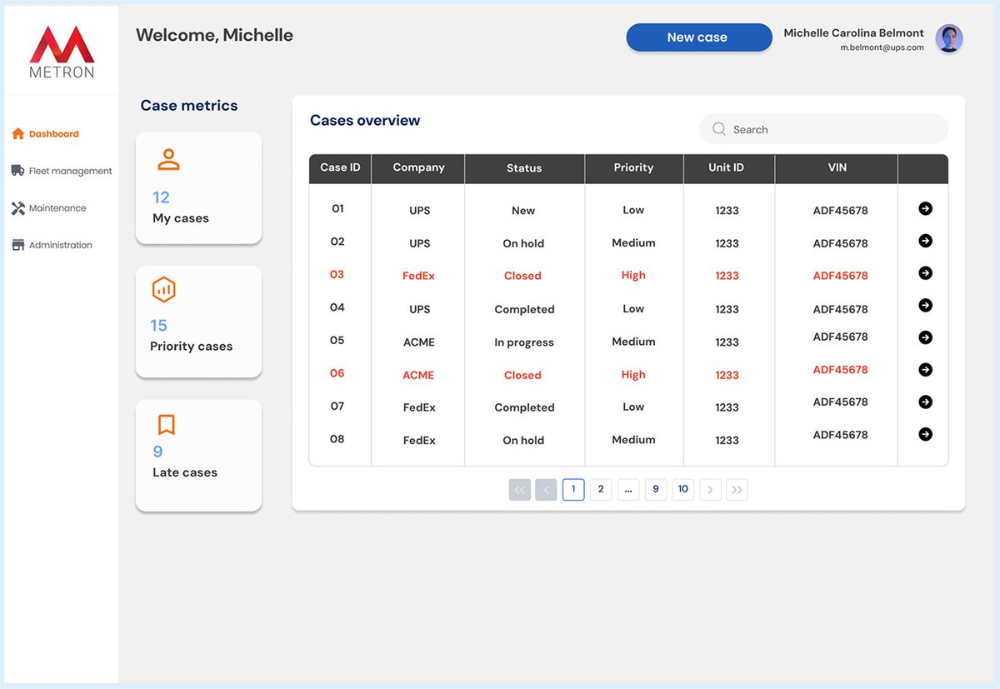

1
A dashboard built for scanning
A structured table with status indicators, sorting and filters, plus a clear navigation sidebar.
TradeoffA denser, less visual view than cards, chosen because fleet managers need to compare many vehicles and cases at a glance.
